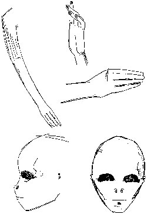

Il se souvient d'un épisode alors qu'il était à la faculté de la petite ville déserte de Roswell (Nouveau-Mexique)
: Le professeur tournait autour en nous demandant ce que nous voulions faire plus tard, et je ne saurai jamais
pourquoi, mais j'ai dit : je veux être croque-mort. Il obtint ce qu'il voulait : toutes les filles rièrent. Mais
Dennis ne réalisa pas que cette boutade allait sceller son destin, déterminer sa carrière d'entrepreneur de pompes
funèbres. On demande à Dennis d'écrire un texte sur ce métier. À sa surprise, il trouve le sujet fascinant, et peu
après, , commence à travailler à temps partiel au Ballard Funeral Home tout en
étudiant au lycée de Roswell. Une fois diplômé, exempté de service militaire à
la 2de guerre mondiale pour perte auditive, Dennis devient apprenti embaumeur à Ballard, travaillant pour mettre sa
sœur jumelle à l'école d'infirmières et d'économiser de l'argent pour entrer à la Faculté de Science Mortuaire de
San Francisco, d'où il sort diplômé .
Peu après son retour au Nouveau-Mexique et à son travail à Ballard, Dennis se marie et installe le ménage dans une
petite maison derrière le salon funèbre. Là, on le charge du travail contracté avec les militaires — service
ambulancier et mortuaire pour le Terrain Aérien de l'Armée de
Roswell d'à côté. Dennis arrange sa vie de "directeur funèbre du pays".
Incident de Roswell
Lors de l'été , les militaires lui auraient demandé des conseils sur la manière d'opérer avec des
corps très petits, et le tiennent vigoureusement à l'écart de l'hôpital lors de sa visite suivante Dennis.
Il aurait rencontré une infirmière à la base qui lui parle de corps qui sentaient très mauvais, aperçus
alors qu'ils étaient autopsiés par 2 médecins. Selon cette dernière, la peau des corps en question était de couleur
gris-brun, ils possédaient de grosses têtes sans cheveux avec des fentes à la place du nez, de la bouche et des
oreilles, et 4 doigts fins sans pouce. Après avoir rencontré Dennis à diverses reprises, l'infirmière disparaît
subitement, ayant apparemment décidé d'aller vivre en AngleterreDennis.
Lorsque Dennis tente de reprendre contact avec elle, son courrier lui est retourné avec la mention "décédée".
Dennis pense que des cadavres extraterrestres avaient été retrouvés sur le lieu de l'accident.
Révélations
Le Dennis rencontre Stanton T. Friedman, auquel il parle pour
la 1ʳᵉ fois de l'activité étrange qu'il avait constaté à l'hopital de la base militaire lors de l'été
, et de corps d'êtres récupérés. Ses révélations sont publiées dans plusieurs livres Randle & Schmitt : UFO Crash at
Roswell, mi-1991< puis dans un 2ᵉ Berliner & Friedman: Crash at
Corona, 1992, The Truth About the UFO Crash at Roswell,
1994Carey & Schmitt : Witness to Roswell: Unmasking the 60-Year
Cover-Up, 2007.
Dennis dépose alors la déclaration sous serment suivante :
Mon nom est Glenn Dennis
Mon adresse est : XXXXXXXXXX
Je suis ( ) employé comme : __________________________________ ( ) à la retraite,
, j'étais entrepreneur de pompes funèbres, travaille pour la Maison Funèbre Ballard à
Roswell, qui avait un contrat pour fournir des services mortuaires au Terrain Aérien de l'Armée de Roswell. Un après-midi, autour
de 13 h 15 ou 13 h 30, j'ai reçu un appel de l'officier mortuaire de la base qui me demanda quelle était le
plus petit cercueil fermé hermétiquement que j'avais en stock. Il dit, "Nous avons besoin d'en connaître ça au
cas où quelque chose arrive dans le futur." Il demanda combien de temps cela prendrait d'en avoir un, et je
lui assurais que je pourrais lui en avoir un le jour suivant. Il dit qu'il rappellerait s'ils en avaient
besoin.
Entre 45 mn et 1 h plus tard environ, il rappela et me demanda de décrire la préparation de corps qui
étaient restés dehors dans le désert pendant une période de temps. Avant que je puisse répondre, il dit qu'il
voulait spécifiquement savoir quel effet les procédures de préparation auraient sur la composition chimique du
corps, le sang et les tissus. Je lui expliquais que nos composés chimiques étaient principalement des
solutions fortes de formaldehyde et d'eau, et que la procédure altèrerait probablement la composition chimique
du corps. J'offris de venir à la base pour aider à tout problème qu'ils puissent avoir, mais il réitéra que
l'information était pour un usage futur. Je suggérais que s'il avait une telle situation je m'efforcerais de
geler le corps dans de la glace pour stockage et transport.
Approximativement 1 h ou 1 h 15 plus tard, je reçus un appel pour transporter un homme en service qui avait
une lacération sur sa tête et peut-être un nez fracturé. Je lui donnais les premiers soins et le conduisis
jusqu'à la base. J'arrivais là-bas vers 17 h.
Bien que je fus un civil, j'avais habituellement un accès libre sur la base parce qu'ils me connaissaient.
Je conduisis l'ambulance alentour vers l'arrière de l'infirmerie de la base et la garais à côté d'une autre
ambulance. La porte était ouverte et à l'intérieur, je vis des débris. Il y avait plusieurs morceaux qui
ressemblaient au fond d'un canoe, d'environ 3 pieds de longueur. Cela ressemblait à de l'acier inoxidé avec
une teinte pourpre, comme s'il avait été exposé à une haute température. Il y avait des inscriptions à
l'apparence étrange sur le matériel ressemblant à des hiéroglyphes égyptiens. Egalement il y avait 2 MPs
présents.
I checked the airman in and went to the staff lounge to have a Coke. I intended to look for a nurse, a 2nd
Lieutenant, who had been commissioned about three months earlier right out of college. She was 23 years of age
at the time (I was 22). I saw her coming out of one of the examining rooms with a cloth over her mouth. She
said, Bon Dieu, sortez d'ici ou vous allez avoir de gros problèmes. She went into another door where a
Captain stood. He asked me who I was and what I was doing here. I told him, and he instructed me to stay
there. I said, "It looks like you've got a crash; would you like me to get ready?" He told me to stay right
there. Then two MPs came up and began to escort me out of the infirmary. They said they had orders to follow
me out to the funeral home.
We got about 10 or 15 feet when I heard a voice say, "On n'en a pas fini avec ce fils de pute. Ramenez-le."
There was another Captain, a redhead with the meanest-looking eyes I had ever seen, who said, "You did not see
anything, there was no crash here, and if you say anything you could get into a lot of trouble." I said, "Hey
look mister, I'm a civilian and you can't do a damn thing to me." He said, "Yes we can; somebody will be
picking your bones out of the sand." There was a black Sergeant with a pad in his hand who said, "He would
make good dog food for our dogs." The Captain said, "Sortez-moi ce fils de pute." The MPs followed me back to
the funeral home.
The next day, I tried to call the nurse to see what was going on. Vers 11 h 00, elle appela la maison
funéraire et dit, "J'ai besoin de te parler." We agreed to meet at the officers' club. She was very upset. She
said, "Before I talk to you, you have to give me a sacred oath that you will never mention my name, because I
could get into a lot of trouble." I agreed.
She said she had gone to get supplies in a room where two doctors were performing a preliminary autopsy.
The doctors said they needed her to take notes during the procedure. She said she had never smelled anything
so horrible in her life, and the sight was the most gruesome she had ever seen. She said, "This was something
no one has ever seen." As she spoke, I was concerned that she might go into shock.
Dessin de Dennis, reproduisant ce que l'infirmière avait dessiné pour lui

Elle me dessina un diagramme des corps, including an arm with a hand that had only four fingers; the
doctors noted that on the end of the fingers were little pads resembling suction cups. She said the head was
disproportionately large for the body; the eyes were deeply set; the skulls were flexible; the nose was
concave with only two orifices; the mouth was a fine slit, and the doctors said there was heavy cartilage
instead of teeth. The ears were only small orifices with flaps. They had no hair, and the skin was
black--perhaps due to exposure in the sun. Elle me donna les dessins.
There were three bodies; two were very mangled and dismembered, as if destroyed by predators; one was fairly
intact. They were three-and-a-half to four feet tall. She told me the doctors said: This isn't anything
we've ever see before; there's nothing in the medical textbooks like this. She said she and the doctors
became ill. They had to turn off the air conditioning and were afraid the smell would go through the hospital.
They had to move the operation to an airplane hangar.
I drove her back to the officers' barracks. The next day I called the hospital to see how she was, and they
said she wasn't available. I tried to get her for several days, and finally got one of the nurses who said the
Lieutenant had been transferred out with some other personnel. Environ 10 jours à 2 semaines plus tard, je
reçu une lettre d'elle avec un numéro APO. Elle indiqua que nous pourrions discuter de l'incident par lettre
dans le futur. Je lui répondis et environ 2 semaines plus tard la lettre revint marquée "Retour à l'envoyeur
-- DECEDE." Plus tard, 1 des infirmières à la base dit que la rumeur était que elle et 5 autres infirmières
étaient une une mission d'entraînement et avaient été tuées dans un crash d'avion.
Le sheriff George Wilcox et mon père étaient des amis très proches. Le sheriff
se rendit à la maison de ma famille le matin suivant les événements à la base et dit à mon père, "Je ne sais
pas dans quel genre de problèmes s'est mis Glenn, mais tu dirais à ton fils qu'il ne sait rien et n'a rien vu
à la base." Il ajouta, "Ils veulent ton nom et celui de ta femme, et ils veulent vos adresses et celles de vos
enfants." Mon père se rendit immédiatement en voiture à la maison funéraire et me demanda dans quel genre
d'ennuis j'étais. Il relata la conversation avec le sheriff Wilcox
, and so I told him about the events of the previous day. He is the only person to whom I have told
this story until recently.
I had filed away the sketches the nurse gave me that day. Récemment, à la demande d'un chercheur, j'ai
essayé de retrouvé mes archives personnelles au funeral home, but they had all been destroyed.
Je n'ai pas été payé ni n'ai reçu rien de valeur pour faire cette déclaration, qui est la vérité du mieux
que je m'en souvienne.
Signé : Glenn Dennis Date:
Cette même année, il crée le International UFO Museum And Research Center de
de Roswell, qui ouvre en 1991-09.
En il regarde l'émission Unsolved Mysteries consacrée à l'incident de Roswell et les appelle pour leur confirmer les
rumeurs de cadavres extraterrestres à la base de Roswell.
On découvrira cependant que Dennis a donné un faux nom aux enquêteurs. Il le justifiera en disant avoir promis de
ne jamais révéler le nom [de l'infirmère] à quiconque.
Références :
Interview with Glen Dennis par Karl T. Pflock (OMNI
Magazine Vol. 17, No. 8, Automne 1995, pp. 100-105, 132)
[Pflock 1994] Roswell: Inconvenient Facts and the Will to Believe (1994)
(Prometheus Books, US, Juin 2001)